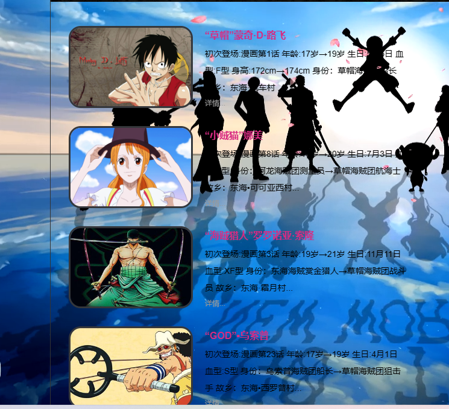

人数:1人 姓名:叶佳城 学号:0223372 班级:软工2213班
- 名称: One Piece!
- 主题: 海贼王动漫里部分人物、剧情、剧照以及创作背景的介绍
- 选题目的: 介绍海贼王
- 工具:VSCode
- 技术:HTML、CSS
- 整体效果：

- 动态背景
- 侧边栏
- 悬浮变色
- 图片为圆角边框视觉效果更美观 
- 注册和留言界面
- 首页和主要人物子页面的图片有悬浮变大效果
网页尽力完成，有许多细节和技巧有待完善，通过这次的大作业，让我感受到了web开发的魅力，也体会到了敲代码的不易。在制作网页的过程中不断学习和提高自己 的专业技术，深刻理解到自己哪些方面有不足，在未来需要静下心认真学习编程，将知识与实践结合，努力学习专业知识，提高个人能力。